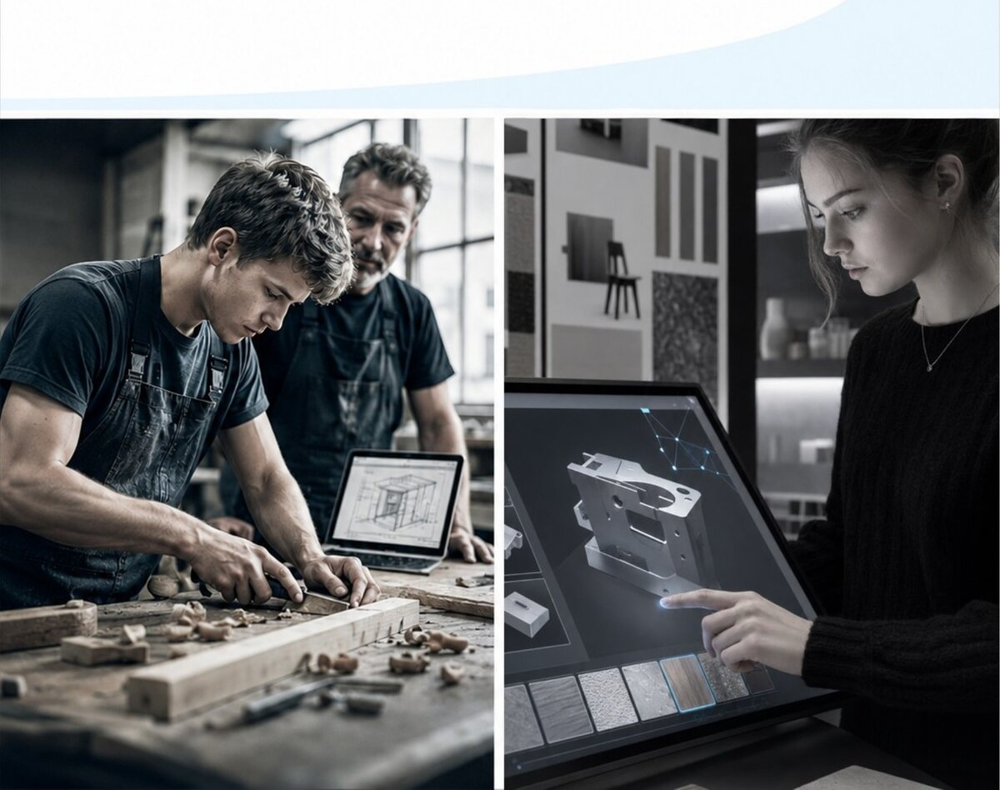
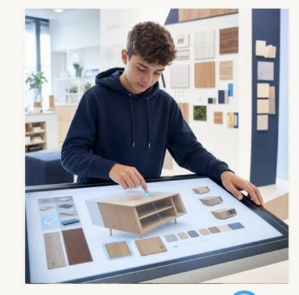
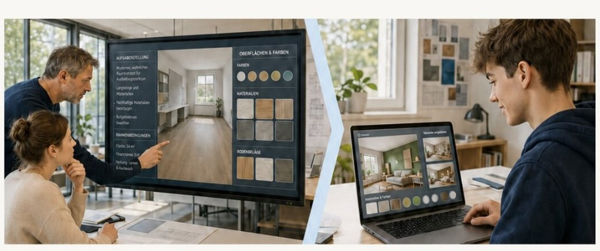
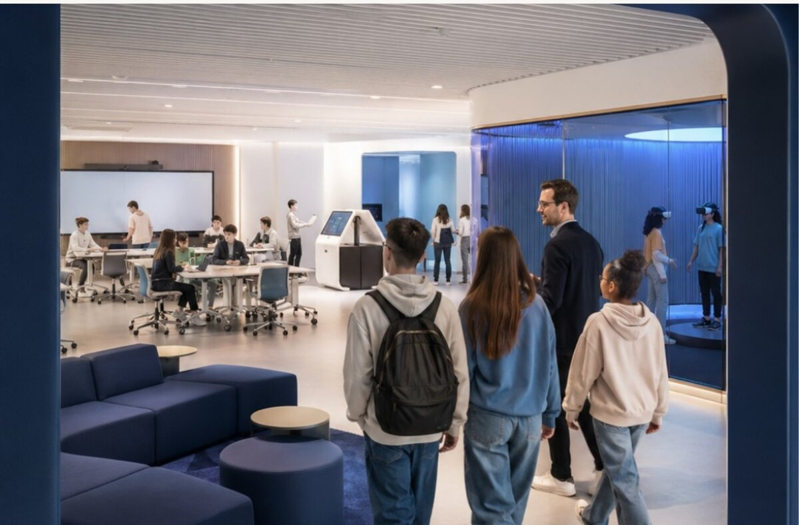
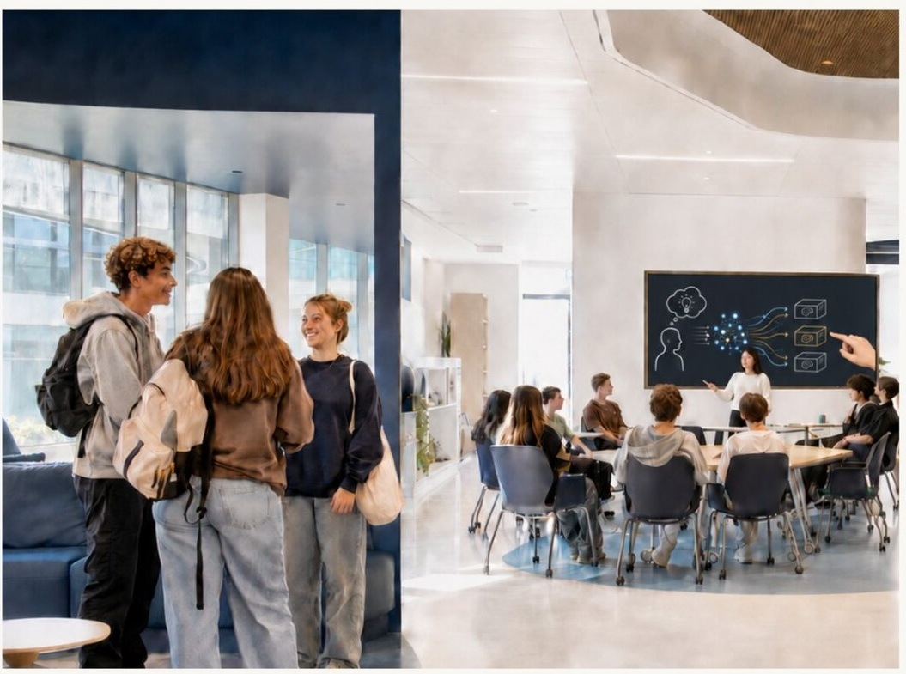
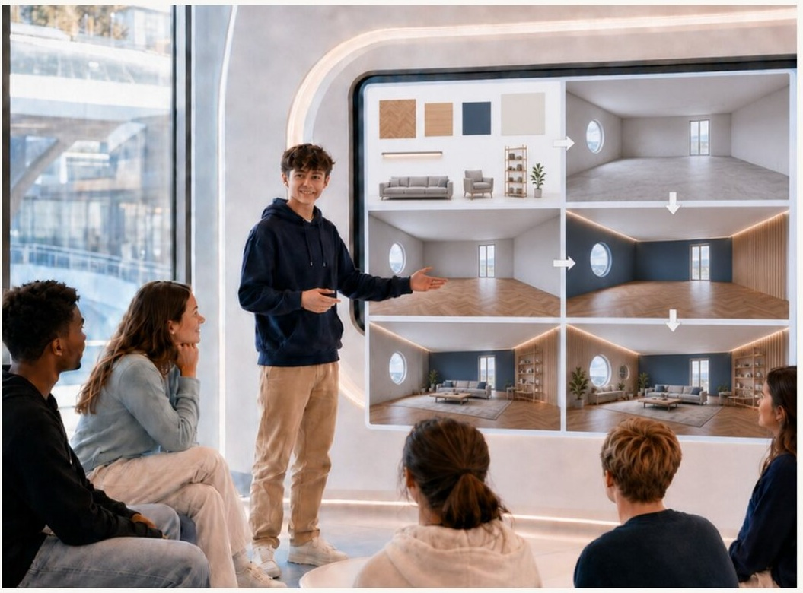
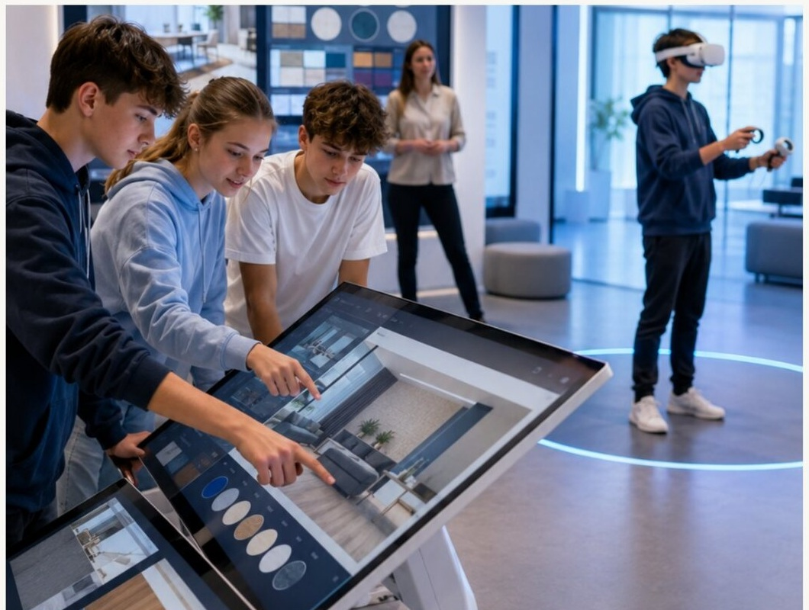
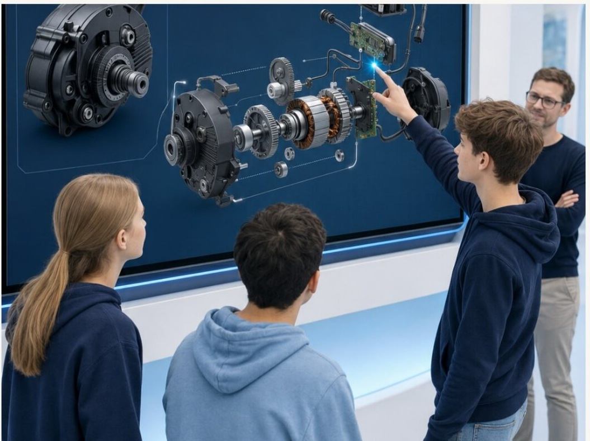
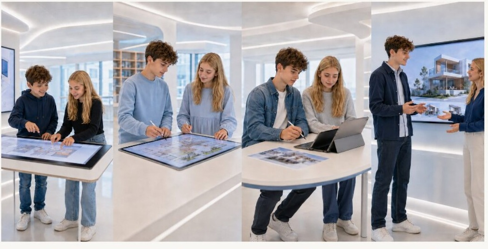
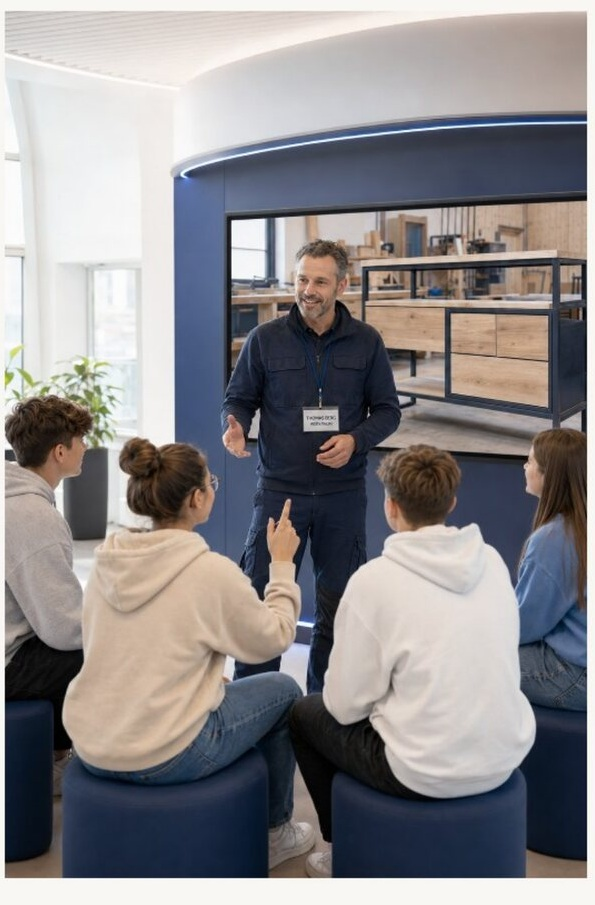

das Handwerk
Menschen. Können. Zukunft.
Ein Zukunftsmodell für Berufsorientierung,
Fachkräftesicherung und Kompetenzentwicklung.

Jugendliche im Mittelpunkt
KI trifft das Handwerk richtet sich an Jugendliche der Klasse 7 bis 10. Das Angebot wächst mit ihnen – vom ersten Entdecken bis zur konkreten beruflichen Perspektive.
Ein Entwicklungsweg, der mitwächst
Neugier wecken
Erfahrungen sammeln
Stärken entwickeln
Perspektive wählen
Eltern und Schulen
begleiten und geben Orientierung
Kammern
verbinden Akteure und Strukturen
Handwerksbetriebe
ermöglichen Praxis und Begegnung
Öffentliche Partner
schaffen verlässliche Rahmenbedingungen
Entwicklung beginnt mit Begeisterung
Wir wecken Interesse, ermöglichen Erfahrungen, machen Talente sichtbar und begleiten junge Menschen auf dem Weg zu einer eigenen beruflichen Entscheidung.

Vom ersten Interesse zur eigenen Entscheidung
Begeisterung wecken
Handwerk erleben
Sich selbst entdecken
Talente entwickeln
Beruflich orientieren
Unternehmen begegnen
Selbstbestimmt entscheiden
Persönliche Entwicklung
Selbstvertrauen · Kreativität
Teamfähigkeit · Verantwortung
Gesellschaftliche Wirkung
Berufsorientierung · Wertschätzung
Fachkräftesicherung · Innovation
Technologie unterstützt diesen Weg. Sie ist niemals Selbstzweck.
Aus Praxiswissen wird
ein KI-Erlebnisraum
So kann Partnerschaft wirken
Partner bringen reale Aufgaben und Fachwissen ein. Das Projektteam übersetzt sie in spielerische, KI-gestützte Erlebnisräume, in denen Jugendliche gestalten, vergleichen und entscheiden.

Praxiswissen einbringen
Partner beschreiben Aufgabe, Möglichkeiten und fachliche Grenzen.
Erlebnisraum entwickeln
Das Projektteam übersetzt Fachwissen in eine spielerische KI-Aufgabe.
Selbst gestalten
Jugendliche wählen Farben, Materialien und Lösungen und simulieren Ideen.
Gemeinsam lernen
Erfahrungen und Rückmeldungen verbessern Aufgabe und Modell.
Kunden nutzen das Modell. Partner gestalten es aktiv mit.
Das Prinzip gilt für Organisationen, Unternehmen und Institutionen.
Der Raum ist das erste Erlebnis
Noch bevor eine Aufgabe beginnt, weckt die Zukunftswelt Neugier, Orientierung und Lust auf eigenes Gestalten.

Ankommen · Verstehen · Gestalten
Erleben · Reflektieren
Fünf miteinander verbundene Bereiche bilden einen durchgängigen Lern- und Erlebnisprozess. Der Raum schafft den Zugang. Technologie ermöglicht das Erlebnis. Jugendliche gestalten selbst.
KI verstehen. Vertrauen gewinnen.
Bevor junge Menschen KI einsetzen, verstehen sie, was sie kann – und was sie nicht entscheiden darf.

Menschliche Idee → KI erzeugt Möglichkeiten → Der Mensch entscheidet
KI erkennt Muster, verarbeitet Informationen und entwickelt Varianten. Sie unterstützt beim Lernen und Gestalten – sie bewertet Jugendliche nicht und nimmt ihnen keine Entscheidung ab.
Aus Bauteilen entsteht ein Raum
Jugendliche wählen Materialien und Elemente aus und erleben unmittelbar, wie jede Entscheidung den Raum verändert.

Materialien wählen → Raum öffnen → Boden einsetzen
Wand und Licht gestalten → Möbel ergänzen → Ergebnis erleben
Die Gestaltung beginnt nicht mit einem fertigen Bild. Aus einzelnen Bausteinen entsteht Schritt für Schritt eine eigene Lösung. Varianten lassen sich vergleichen, verändern und erneut erproben.
Gestalten. Simulieren. Erleben.
Am Terminal entwickeln Jugendliche Lösungen. Mit VR erleben sie deren räumliche Wirkung.

KI Design Lab
Farben, Materialien, Oberflächen und Räume werden digital ausgewählt, verändert und verglichen.
VR Experience
Virtuelle Räume und technische Zusammenhänge werden sicher, unmittelbar und räumlich erlebbar.
Bildschirm- und Projektionsalternativen sichern einen gleichwertigen Zugang für alle Jugendlichen.
KI trifft Mechatronik
Komplexe Systeme werden verständlich, wenn Jugendliche Baugruppen öffnen, Zusammenhänge entdecken und Funktionen nachvollziehen.

Mechanik · Elektronik · Sensorik · Steuerung · Software
Vom Gesamtprodukt bis zum einzelnen Bauteil: Jugendliche erkennen, wie Motor, Getriebe, Sensoren, Elektronik und digitale Steuerung zu einem intelligenten System zusammenwirken.
Die virtuelle Darstellung erlaubt gefahrloses Zerlegen, Vergleichen und erneutes Zusammensetzen.
Talente erkennen. Talente fördern.
Kompetenzen entwickeln.
Von Klasse 7 bis 10 begleitet das Modell junge Menschen auf einem persönlichen Entwicklungsweg – vom ersten Interesse bis zur sichtbaren Kompetenz.

ausprobieren · neugierig werden
Stärken wiederholt wahrnehmen
gezielt herausfordern · reflektieren
selbstständig handeln · Perspektiven öffnen
Talente
sind natürliche Potenziale, Interessen und persönliche Arbeitsweisen. Sie zeigen sich beim Handeln – nicht in einem einzelnen Test.
Kompetenzen
entstehen durch wiederholtes Anwenden, praktische Erfahrung, steigende Herausforderungen und gezielte Förderung.
Der Übergang beginnt
mit Begegnung.
Jugendliche und Unternehmen lernen sich frühzeitig kennen – persönlich, offen und über gemeinsame Erfahrungen. Nicht Bewerbungsunterlagen stehen am Anfang, sondern Vertrauen.
Jugendliche zeigen
- ihre Interessen und Talente
- ihre Erfahrungen und Projekte
- ihre Vorstellungen vom Berufsweg
Unternehmen zeigen
- ihre Arbeits- und Ausbildungswelt
- Projekte und Entwicklungsmöglichkeiten
- Kultur, Menschen und Zukunftsperspektiven

Das gemeinsame Ziel
Beide Seiten prüfen, ob sie zueinander passen – und welche gemeinsame Entwicklung möglich ist.
Aus Begegnung wird Perspektive.
Der Übergang in Ausbildung und Beruf entsteht schrittweise – aus sichtbaren Talenten, persönlichen Begegnungen, gemeinsamen Erfahrungen und gegenseitigem Vertrauen.
Talente und Kompetenzen sichtbar machen
Interessen, Erfahrungen und Kompetenzen werden aus dem bisherigen Entwicklungsweg sichtbar.
Berufliche Perspektiven öffnen
Passende Berufsfelder werden geöffnet, ohne Jugendliche vorschnell festzulegen.
Unternehmen stellen sich vor
Betriebe zeigen Projekte, Kultur sowie Ausbildungs- und Entwicklungschancen.
Persönlich begegnen
Beide Seiten stellen Fragen, hören zu und lernen sich persönlich kennen.
Gemeinsam erproben und vereinbaren
Praktische Erfahrungen führen zu gemeinsam vereinbarten nächsten Schritten.
Ausbildung selbstbestimmt entscheiden
Jugendliche entscheiden auf Grundlage von Erfahrung, Vertrauen und Perspektive.
Mögliche nächste Schritte
Der Übergang ist kein Abschluss des Modells. Er ist der Beginn einer erfolgreichen beruflichen Entwicklung.
Vertrauen braucht klare Regeln.
Governance schafft Orientierung. Die Ethik-Charta schützt die Menschen. Gemeinsam bilden sie das Vertrauensfundament des Modells.
Sieben verbindliche Grundsätze
Klare Entscheidungshoheit
KI unterstützt
Potenziale sichtbar machen
Entwicklung begleiten
Orientierung ermöglichen
Es bewertet, kategorisiert und manipuliert sie nicht.
Werte müssen auch morgen gelten.
Das Modell entwickelt sich weiter. Seine Identität, seine Verantwortung und sein Vertrauensversprechen bleiben verbindlich.
Was kann die Grundordnung berühren?
Der verbindliche Sicherungskreislauf
Beobachten
Veränderungen erkennen
Prüfen
Grundsätze abgleichen
Bewerten
Chancen und Risiken
Empfehlen
Handlung transparent begründen
Entscheiden
Zuständige Instanz entscheidet
Sichern
Umsetzung und Einhaltung prüfen
Verbindlich für alle Beteiligten
Governance · Ethik-Charta · Datenschutz · Rechtliche AnforderungenMenschenorientierung · Transparenz · Fairness · Verantwortung
Aus dem Modell wird ein
gemeinsames Zukunftsprojekt.
Damit aus dem Modell ein verlässlicher Lern- und Erlebnisraum entsteht, werden fünf Handlungsfelder gemeinsam geplant und konsequent aufeinander abgestimmt.
Raum und Standort
Atmosphäre, Lernen und Begegnung zusammenführen.
Technologie und KI
Terminals, VR und Simulation sinnvoll integrieren.
Partner und Träger
Fachwissen, Zugänge und Verantwortung verbinden.
Finanzierung
Investition, Betrieb und Förderung tragfähig gestalten.
Projektsteuerung
Schritte, Qualität und Inbetriebnahme verlässlich führen.
Gemeinsam in die Umsetzung
Rahmen klärenErproben
Pilot umsetzenVerankern
Erfahrungen übertragen
Zukunft mitgestalten.
KI trifft das Handwerk wird dort wirksam, wo Menschen, Unternehmen und Institutionen ihre Möglichkeiten zusammenbringen und gemeinsam Verantwortung übernehmen.
Impulse geben
Praxiswissen, reale Aufgaben und Erfahrungen einbringen.
Pilot ermöglichen
Räume, Technologie, Finanzierung oder Zugänge bereitstellen.
Verantwortung übernehmen
Erproben, gemeinsam lernen und Erfahrungen weitertragen.
Wen wir einladen
Handwerk · Industrie · Schulen · Kammern
Kommunen · Bildungsträger · Technologiepartner
das Handwerk
Menschen. Können. Zukunft.
Ein Zukunftsmodell für Berufsorientierung,
Fachkräftesicherung und Kompetenzentwicklung.
Gemeinsam schaffen wir neue Wege
in Ausbildung und Beruf.
UNTERNEHMENSBERATUNG GLANZ
Michael Glanz
Strategie · Innovation · Transformation
www.glanz-consulting.de